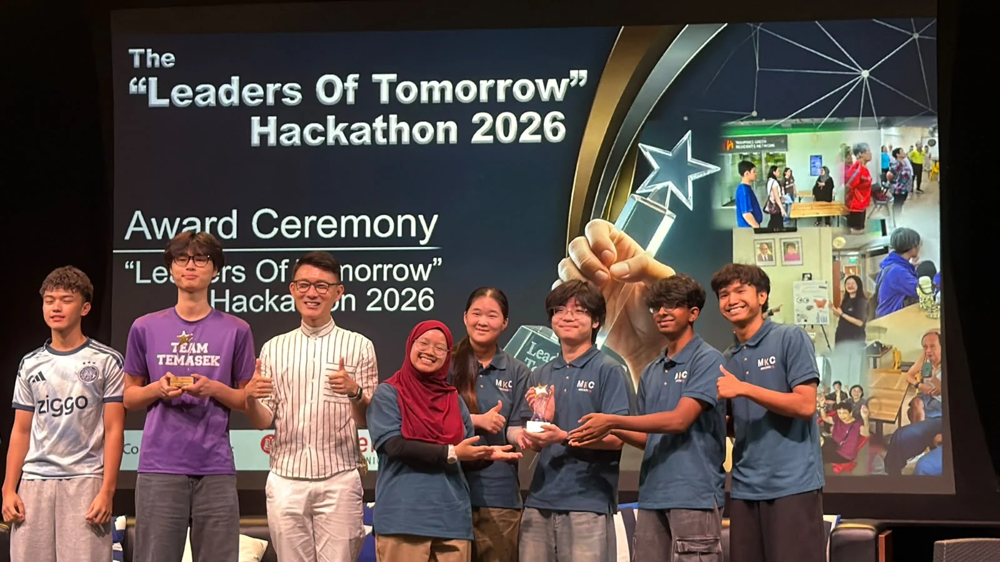

Temasek Polytechnic
Foundation Scholarship
Awarded in recognition of excellent academic performance.
Code. Curiosity.
Connected.
I’m an Applied AI student building useful things — from machine learning tools to games, apps and stronger communities.
Explore my workThe 3D view is unavailable on this device. Use “Browse connections” below to explore every project and skill.
PICK A THREAD
16 projects. Skills, certificates and community work. Click anywhere in the network to step inside.
A few ideas that
made it out of my head.
No projects match that search. Try another technology or category.
I’m Hannan, a Year Two Applied AI student at Temasek Polytechnic. I like the moment an idea becomes something you can actually use, whether that’s a machine learning tool, a campus app or a story you can play.
I’m interested in the connections between disciplines. Code and design. Data and decisions. Technology and the people it’s meant to help.
Download my CV ↗Diploma in Applied
Artificial Intelligence
DIRECTOR’S LIST · 2026
EXPECTED GRADUATION · MAY 2028
Current cumulative GPA: 3.90 / 4.00. Director’s List, 2026.
Awarded in recognition of excellent academic performance.
Recognised among the top 25% in my level and course for academic performance and conduct, and awarded the Merit Bursary.
EARLIER FOUNDATIONSFive GCE O-Level distinctions. Additional Mathematics, Elementary Mathematics, Physics, Chemistry and Humanities.
Technical skills, with projects you can explore.
Feature engineering, model comparison and evaluation, predictive analytics and data analysis, brought together in machine learning applications.
Cloud service integration, API workflows and AWS Lambda backends. Mobile application development with Flutter, Dart and Firebase.
Python automation and robotic process automation with UiPath. Git version control and GitHub project management support how I build and collaborate.
People make the
interesting things happen.

First place with Men’s Kaki Club. Our team worked with Precious Active Ageing Centre to organise a coach-led fitness and conditioning session, helping senior men aged 55+ connect and stay active.
TEAMWORK / COMMUNITY / ACTIVE AGEINGBuilding a CCA, organising events and learning alongside others. These are the experiences that shape how I work with people.
Orientation Leader for an assigned class during IIT Freshmen Orientation 2026; participant at Polytechnic Forum 2026; event official for TP Open House 2026 and LEAD onboarding; project presenter at the IIT Director’s Walkthrough. Also supported CCN May 2025 and the November 2025 TPOF event.
Class Module Representative and Class Treasurer in 2025. CCA record: Excellent.
Sands Theatre, Marina Bay Sands · Part-Time UsherAUG 2025–PRESENTAssist guests with seating, directions and enquiries during live performances. Support crowd movement and coordinate with colleagues and supervisors to keep event operations running smoothly and provide professional customer service.
Learning, with
something to show for it.
AI, data, software, or something
that doesn’t fit neatly in a box.